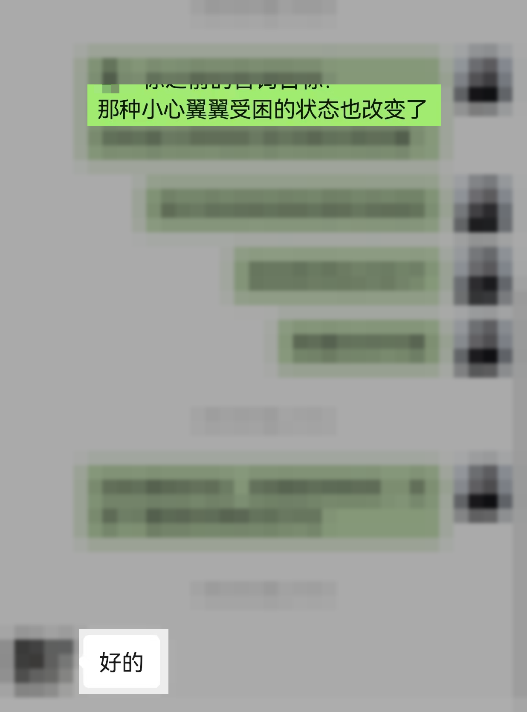

CASE 004 · 家庭关系
夫妻关系长期疏远，为什么孩子也越来越不合群？
孩子的问题有时不只属于孩子。当夫妻长期失去连接，家庭里的紧张、沉默和防御，也会慢慢进入孩子的身心与关系。
01 / 一个家庭可能同时出现的信号
每个人都很辛苦，
却越来越靠近不了。
- 夫妻长期疏远，只剩下安排生活和处理问题
- 一沟通就防御、争论，最后只能彼此沉默
- 孩子越来越退缩、不合群，或承担家庭情绪
- 所有人都想改变别人，却看不见互动怎样循环
02 / 渡月如何帮助这类家庭
不急着判断谁对，
先看见系统怎样运转。
我会帮助家庭成员区分角色、责任和边界，看见每个人的行为怎样影响下一步。一个位置开始变化，整个家庭才可能出现新的互动。
- 识别夫妻与亲子之间反复发生的循环
- 调整边界，让孩子不再承担成人关系
- 把沟通从责怪变成可以执行的改变

03 / 更多细节不公开
公开的是问题结构，不是一个家庭的秘密。
夫妻互动、孩子经历、生活安排与咨询过程中的具体内容不会在网站展示。
START FROM THE REAL PROBLEM